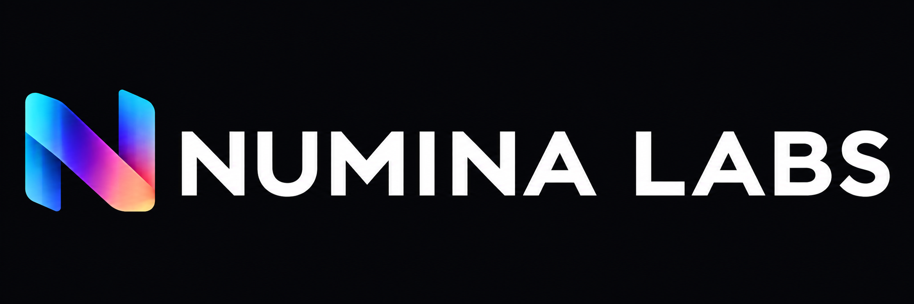

Context before action.
Designed to monitor volatility, liquidity and technical indicators, then surface evidence for review.
SIMULATED / NO DATA FEED
Market context. Payment orchestration. Controlled execution.
All prices, signals, costs, and actions below are simulated.
Momentum is strengthening in this synthetic series. Review liquidity and risk limits before considering an action.
| Event | Market | Quantity | Reference price | Status |
|---|---|---|---|---|
| No paper orders yet. Simulate an order to explore the workflow. | ||||
Hypothetical fees for exploring the interface—not estimates of actual providers. Real costs depend on liquidity, redemption, FX, custody, jurisdiction and payout partners. Faster network confirmation is not the same as recipient bank availability.
Designed to monitor volatility, liquidity and technical indicators, then surface evidence for review.
SIMULATED / NO DATA FEEDDesigned to compare funding, network, conversion and payout costs against business constraints.
SIMULATED / NO PAYMENT PROVIDERDesigned to prepare orders, check permissions and request approval before permitted execution.
SIMULATED / NO BROKERTry the circuit breaker. When enabled, the terminal blocks new paper orders and payment previews.
Explicit permissions, beneficiary allowlists and notional limits before an agent can propose an action.
Record the inputs, signal context, policy checks and reasons behind each proposed action.
Escalation, approval and a circuit breaker belong in the operating model—not outside it.
A coordinated operating layer for intelligence, treasury, and execution.
The proposed platform connects market and on-chain data to technical analysis, scenario evaluation, and payment or execution workflows. Agents would monitor predefined conditions and prepare actions within a policy framework. People retain control of permissions, risk budgets, and consequential approvals.
Early-warning signals aim to identify changing conditions; they cannot provide certain advance notice of a market swing. Execution latency, fills, network finality, and bank payout times would be measured separately. No speed, savings, or investment-return claim is represented by this prototype.
Licensed market data, on-chain events, and business obligations would enter a normalized event pipeline with freshness checks.
Quantitative indicators and scenario models would describe exposure, liquidity and uncertainty, with source evidence attached.
Agent permissions, limits, counterparty screening and human approvals would determine which actions can proceed.
Approved instructions would go through contracted payment, custody or execution providers. Quotes and failures need explicit handling.
Confirm outcomes, match receipts to obligations, log exceptions and preserve a reviewable audit record.
Production integrations, secure custody, compliance processes, resilience testing and independent security review are still required. This website does not hold money, place trades, or provide a live payment service.
Explore proposed enterprise plans ↗